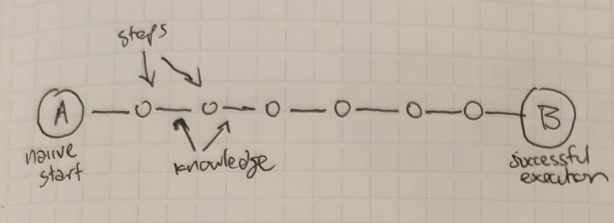
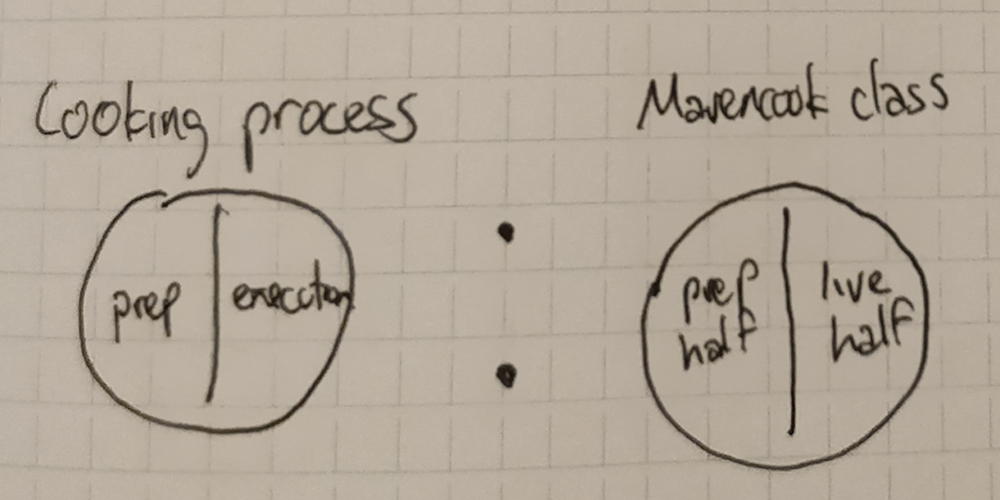

Organizing Complexity in Neonatal Care
I worked with Stanford Hospital to understand, analyze, and streamline delivery room communications in critical scenarios.


Problem
In a routine delivery, if things go well, there are only a couple people in the delivery room - a doctor and a nurse or two. However, if complications arise many more people are needed - up to ten or twelve in many cases.
These people fit into four roles: Obsetrics / OB, Anesthesia, Pediatrics / NICU, and Nurses. Because of this, the room can become quite chaotic in critical scenarios, when four teams are working side by side with two lives at stake.
Role
I was responsible for leading the design process and working with stakeholders across the neonatal division. I conducted initial discovery and research as well as communications and system design.
Deliverables
I delivered a robust protocol system and presented it to the division.
Process
My design process for this project was one of iteration in all verticals - problem statement, mental model, prototype, and results. Keep scrolling to watch the story unfold.
1
Background
Consider a delivery room.
In a routine delivery, only a couple people are needed in the delivery room - a doctor and a nurse or two - to deliver the baby successfully.
However, if complications arise, many more people are needed, to contain and manage potentially critical scenarios - if a c-section is required, the baby is premature, or a myriad of other possibilities. In these scenarios, up to ten or twelve people are needed in the same room.
These people are split into four roles:
- Obstetrics/OB: Takes care of the mother
- Anesthesia: Manages pain
- Pediatrics/NICU: Takes care of the baby
- Nurses: Circulate, administer care, and provide aid to each team
This can become quite chaotic in critical scenarios, when four teams are working side by side in a crowded room.
This was the scenario that I tackled, along with a team of medical staff in the neonatal department at the Stanford Hospital.
2
Discovery and Needfinding
The first step was to understand the problem. I conducted observation sessions in the simulation room to assess the situation and identify pain points. Most of the live work for this project was conducted in the simulation room due to medical privacy and ethics regulations.
Research goal:
Gain a background understanding of the operational challenges of a critical delivery room scenario
Research method:
Observed simulations of a difficult delivery involving 8-12 medical trainees
Research results:
Each simulation was scripted to follow a delivery unfolding in real time, in which team members are called for as needed. I tried to follow the parallel lines of communication and activity that were taking place. My initial impression was that it was very difficult to follow. All participants were in uniform, so tracking roles and communication lines was difficult, especially because new people were constantly entering the room. When each participant entered the room, they would initiate a flurry of activity - introductions, briefings, and instructions. However - there was no set protocol for these interactions, the briefings were not comprehensive, and because of this they were often repeated. Essentially, the transfer of information was inefficient and redundant.
From these insights, I set a problem statement to drive the initial direction of our work:
"How might we eliminate redundancies in information transfer in the delivery room?"
This set the frame for the project, and I was able to move into the design phase.
3
Design for Communication
Watching the simulations felt like watching sports teams, except all players were wearing the same blue uniform. This insight led to our first direction - to set a visual protocol using color.
Each team had a team lead. For the first three, this was the attending physician. For the nurses, this was the primary nurse. In the delivery room, I found it very confusing trying to keep track of roles, so I assigned a color to each team.
Using this, I created a simple baseline mental model illustrating the teams, the team leads, and the colors. My hunch was that using color to make roles immediately obvious would lessen associated cognitive load.
Next, we conducted a series of interviews with team members.
Research goal:
Understand the dynamics and constraints of the problem
Research method:
Conducted ethographies with doctors and nurses who work in a delivery room in a diverse variety of roles.
Research results:
We understood the nature of complexity in the delivery room and identified significant insights that were used to frame the rest of the project. Specifically, the results from two interviews were significant in driving our direction.
Interviewee: Irene, M.D.
Hospitalist
A hospitalist is a specialist trained to administer care for patients and handle many different situations. They are called in critical situations and work with the team in capacities depending on necessity and background.
According to Irene, roles change a lot in the delivery room. This is because situations can change significantly throughout the course of the operation - new information and problems arise, requiring reassessment of priorities and reformulation of strategy. Because of this, role changes are inherent to the situation.
Interviewee: Lorena, R.N.
Fetal Intervention Nurse Coordinator
As a charge nurse, Lorena assigned nurses to different teams and situations as they occurred. Nurses operate semiautonomously, assisting various teams as well as the Primary Nurse.
With Lorena, I asked her to explore the dynamics of information transfer in a changing environment. She talked about how roles change as the situation does - hospitals are always understaffed, so when critical issues arise that require immediate attention, roles will follow - demand vastly outstrips supply.
A simple example
Initially, two nurses are assigned to handle care above the waist (ATW) or below the waist (BTW). These roles are not only balanced, so one of the two may begin a different role when a lull occurs on their side. When care is required again, the original role needs to be filled again, and a new nurse is called and assigned to the situation. Introductions and briefings ensue. Because this is reactive, confusion often occurs. We realized that without a robust mental model, changing roles create confusion.
Our focus was on redundant communications, so I decided to assign a centralized information source. I took the baseline mental model and made adjustments accordingly. We wanted a central point that would conduct briefings and serve as a conduit of complete information. The Primary Nurse was one of the only members that regularly communicated with all teams, so I assigned that role to the primary nurse.
4
Refining the Problem
Next, I extracted the dynamics of the problem from its context in search of analogous situations. We searched a case in which:
- A team of specialists work together in high pressure situations and life-or-death scenarios
- Objectives are fluid and can change significantly throughout the course of a scenario
- Roles are fluid and can change significantly throughout the course of a scenario
I drew an analogy with military communications. In a military operation, soldiers undertake high-pressure missions in which failure can result in significant loss of life, and split-second decisions are necessary for success. I decided to talk to people with experience in military roles.
Research goal:
Obtain insights from the analogous situation of military communications
Research method:
Conducted ethographies with ex-military individuals.
Research results:
Of the ethnographies, one produced insights that significantly guided our search for a solution.

Interviwee: Anne
Navigator, US Navy Dept. Director, NSW
Anne spent 15 years as a navigator, working on the bridge to bring large Navy ships into foreign ports.
As a navigator, Anne was responsible for working under the captain on the bridge of a ship when entering port. Foreign ports have very different laws, languages, and customs, as well as terrain that is often invisible over the surface of the water. The bridge could contain up to 15 different individuals in diverse capacities who coordinate and communicate with each other constantly to bring a ship into port.
I asked Anne to talk about a memory in which the situation became chaotic, and she responded that she could not recall a single one in fifteen years. When speaking on the bridge, each individual would preface their report with a identifier - indicating exactly whom the information was targeted towards. Thus, individuals could tune into and out of communications as necessary or desired, instead of keeping a parallel mental channel open for all communications.
I decided to revise our problem statement:
"How might we create robust visual and communications protocols to reduce confusion and streamline information transfer?"
With new insight, I took the mental model and made adjustments accordingly. Each participant was now assigned a color and a number. The lead of each team (attending physician, primary nurse) was assigned the number ‘1’, and all other numbers were assigned in the order of arrival. Since nurses work with different teams, each nurse is connected to the team they are assisting, and report to the primary nurse.
Here, the visual/communications protocol began to take shape. Each participant would wear stickers with their color and number. Participants would preface their communications with their target, for example: “Blue team” for anesthesia, or “Red one” for attending OB, instead of using names. There was no need to remember names, faces, or roles, and a quick visual sweep was all that was necessary for full identification.
5
Prototyping
We wanted to quickly validate without being bound to a sporadic simulation schedule. The method was analogous situation in the form of a card game.
Rules of the game were chosen to be analogous to the delivery room scenario:
- Participants take card pieces from a standard deck.
- Each participant is assigned a color to work with and a task: either to cut out suit icons with scissors or to color in the already-cut icons.
- They each had to preface all communications with their target.

Research goal:
Validate the color-number protocol w.r.t. cognitive load in a low-overhead way (without scheduling simulation time
Research method:
Two rounds of the game were played for each audience. In the first, participants were asked to refer to each other by name only - this was the control. In the second, participants were instructed to use their respective assigned number-color combinations to refer to each other.
Research results:
We conducted a few trials with different groups of players, and I interviewed each participant afterwards. Participants expressed how the second iteration was not significantly more efficient in time, but it was more comfortable to use codenames and easier to focus on the task instead of remembering the name of someone they had just met.
Results from the first prototype were encouraging, so we proceeded with a full prototype in simulation.

Research goal:
To observe the color-number system in action in a delivery scenario.
Research method:
We scheduled a full simulation in the sim room and got approval from hospital administration to test the prototype in it. Stickers were created that were to be placed on the shoulders of participants. The simulation had three teams: OB, Anesthesia, and Nurses.
Research results:
Before the trial, I gave a briefing explaining the protocol. Total time was 15 minutes, during which the communications identifier was only used twice. I interviewed a few participants after the trial.

When questioned about communications protocol use, participants expressed that it was “a little awkward” because they already knew each other’s names and were all friends. This is different from a live scenario, where most participants would not know each other. However, feedback was positive - participants expressed that the visual cues were extremely helpful and that having the mental model in place made things less stressful. They indicated that the stickers were small, and placement made them difficult to see.
6
Final Iteration
With this feedback, I created a final iteration. Stickers were enlarged and location was moved to the chest and back area. Because of lighting changes and potential issues with colorblindness, a small letter code was added to either side of the number on the decal.
The mental model was revised to reflect the letter code. Additionally, we observed that communications roughly followed the lines we had implemented, but they were not rigid - so I updated the mental model to include spheres of communication.


7
Results and Takeaways
1
Background
Watching the simulations felt like watching sports teams, except all players were wearing the same blue uniform. This insight led to our first direction - to set a visual protocol using color.
Each team had a team lead. For the first three, this was the attending physician. For the nurses, this was the primary nurse. In the delivery room, I found it very confusing trying to keep track of roles, so I assigned a color to each team.
Using this, I created a simple baseline mental model illustrating the teams, the team leads, and the colors. My hunch was that using color to make roles immediately obvious would lessen associated cognitive load.
Reflections: The assumption was that people with varying levels of experience approach cooking differently. Due to the broad problem we were tackling, I didn't delineate higher resolution categories at this stage - perhaps we would have learned more, but at the time we wanted to explore broadly before narrowing down to prevent overfitting over arbitrary categories.
2
Design for Education
Cooking is a learning process, so I studied the cooking process through the lens of our education system.
Traditionally, the American education system has been curriculum-based, with teachers as a standardized mode of delivery. We know there is no one-size-fits-all approach to learning, and yet we continue to instruct and evaluate students on a standardized, uniform basis. Other countries, like Finland, have seen huge success in adopting a human-centered educational model, with quality teachers at the center in a curriculum that adapts to the individual needs and dynamics of each student and teacher. This process has paid off, with Finland consistently ranking significantly above the US across the board in many educational metrics.
I made the assumption that cooking, like education, faced a similar scenario: that learning cooking is more about people than the recipe. We wanted to validate that the dynamic of human interaction through a videochat channel provided a more rewarding cooking experience than one-way learning through recipes (cookbooks and videos, etc).
Research goal:
Validate our assumptions and gain a deeper understanding of the dynamics of live cooking in an educational context by testing this hypothesis.
Research method:
We set up cooking sessions with five participants, with the requirement that each user had to have learned at least one new dish from an online recipe within the last month. These participants were then taught a recipe through video chat by a chef. I observed the sessions and interviewed the subjects.
Research results:
Reactions were overwhelmingly positive, and we identified a series of insights into the dynamics of the scenario.
- Cooking alone for yourself is lonely. Having other people there virtually makes it much more fun, because it feels like you're cooking with/for a big family. Kerry “I love cooking with my daughter and her boyfriend. This was really fun, and it kind of felt similar"
- Recipes are just guidelines - and being able to get advice in real time is a missing piece of the puzzle that makes the experience more complete and more rewarding. Jay “It was really helpful being able to see what she was doing and getting feedback"
- Live feedback is about more than just fixing mistakes. In multiple instances, significant mistakes were caught by the chef and fixed before further damage could have been done. However, participants mentioned that even when things were going well, they felt a lot more confident executing with a responsive host.
Our participants talked as much about the chef as they did about the food. Most of them reached out to us afterwards to ask about doing future sessions, and stressed that making a dish perfectly on the first try was incredibly rewarding.
We interpreted this as a strong indicator that
- - Cooking is a learning process and faces similar problems as education in general
- - We cannot ignore the role of people in any form of education, and human-centered instruction is successful for teaching cooking
- - Live video chat is a promising channel for cooking together
With these results, I refined our problem statement:
"How might we create a platform for cooking education centered around live videochat?"
Next, I focused on the problem from another angle.
Reflections: It felt good to have strong validation that we were on the right track. However, in hindsight I think it would have been userful to delve deeper into the individual host-student dynamic at this step - it would have saved time when designing for failure (section 6), and would have been useful in fleshing out user profiles more deeply.


3
Design for Navigation
From here, I started working on user stories, assessing features, and mapping out the flow, but I also continued exploration the problem from another perspective.
I extracted the dynamics of the problem from its context in search of analogous situations. We searched a case in which:
- The previously identified pain points were relevant and significant
- The experience was similar - users read and execute a set of instructions in a changing real-time situation in pursuit of a final goal
- The platform was on mobile
We considered a number of possible cases and arrived at the analogy of navigation. In road navigation, our main pain points are relevant:
- We tend to prefer the routes and roads that we know
- There are many ways to arrive at a destination, and it’s difficult to know which to pick from looking at a traditional map
- Failure is highly discouraging, whether it means being late or having an accident
- Preparation is important. It’s very helpful for the driver to study the route before executing.
I set a problem statement for this section:
"How might we communicate information for effective navigation of a recipe?"
I surveyed the most popular navigation applications. I observed people using the app (friends, uber drivers, and others), and mapped their actions and emotions during the navigation of a route, and recorded their experiences with driving. To identify relevant segments of the experience, I compared this to data and maps gathered from cooking trials. I quickly zeroed in on the pre-trip information display, which was reminiscent of the pre-cooking briefing that many kitchens practice. This phase of a trip gives the user a lot of information about the upcoming drive, which is crucial to both new drivers and experienced drivers alike - it informs a mental model of the journey ahead.
In Maps, the user is presented with the map first and is shown a large body of crucial information in a simple, clear, and concise display that communicates:
- Destination overview
- Possible routes (with steps to take) and time needed (situational details)
- Traffic, construction, accidents, (situational modifiers)
Because cooking benefits heavily from prior experience (from accumulated meta-knowledge), we wanted to communicate prior information in a streamlined, easily digestible manner that highlighted tips, pitfalls and pain points. We brainstormed to identify knowledge valuable in understanding, and refined the results into two categories of meta-knowledge (aside from the recipe) that were important for cooking well:
- Ingredient dynamics - how ingredients behave, background info, other uses, taste, culture/history, and theory.
- Chef’s tips - information related to steps, shortcuts, hacks, indicators, and parallel uses.
Interpreting a list of cooking steps as a route with a series of instructions, we concluded that we desired on a pre-cooking interface that clearly and concisely communicated analogous expectations:
- Recipe and host overview
- Steps to execute with personal tips (situational details)
- Materials needed with expanded info on selected ingredients (situational modifiers)
With this more robust mental model of a recipe and the information framework built on it, I moved into the design phase.
Reflections: This was one of the coolest parts of the project. There are so many parallels that it was initially difficult to decide which ones were relevant. Mapping user emotions really helped, and was very enlightening. We ended up going with the simplest complete display of information that we had at the time, but it would have been cool to run some cross-vertical tests teaching expert drivers (Uber drivers, etc.) to cook using our interface, and analyzing how expert chefs interpret navigation interfaces. During this time, I was exploring visual abstractions of recipes as well, pulling themes from another navigation vertical - public transportation maps - to do so. I ended up in some interesting places with a couple leads, but didn't end up fully exploring that world and would very much like to pursue it again. Recipes really are so inefficient at communication...
4
Making Models
Throughout the process of designing and understanding the entire system, I continuously sketched, revised, and updated mental models to aid in framing the process. Below are some sketches and descriptions of the models that I settled on, each detailing a piece of the experience, platform, or system.
I interpreted a recipe as a route from a starting point to an ending point. Since we are a cooking education platform, I assume a naiive start (A) and a successful end (B). The points are spanned by a number of 'steps' - the actions that we see in books or online instruction sites. Steps are connected by knowledge, i.e. knowledge of execution, theory, or background related to the specific steps at hand. This is the knowledge that needs to be communicated from host to student in a class.

Another way to abstract a recipe is as the union of three elements. The base is the traditional recipe, consisting of instructions. Augmenting the instructions is knowledge of the ingredient dynamics and techniques that can be applied in the context of the instructions. The union of these three elements forms our understanding of a recipe.
I defined our classes in the same way we understand the cooking process. In cooking, we have a prep section and an execution section. In a Mavencook class, we have a prep half consisting of a UI containing recipe information, and a live half consisting of instruction over a videochat channel. The structure and goals are analogous, the but the methods are different.

The student experience in defined by the personal connection with the host in the context of the Mavencook class - we understand food to be about people more than process. In essence, the class is the medium through which the personal connection is facilitated. The student experience is this connection. This was useful in putting our ideas in perspective: "is [insert feature or action] facilitating a better connection?" was a question that was often asked.

The final model is of the relationship between the platform and the community. The Mavencook platform consists of the set of all classes. We have hosts on one side of the platform, and students on the other side. The Mavencook community consists of the platform as well as both sides.
Reflections: I was working on a complete unifying model, but realized that it wasn't necessary - it was better in our case to have small, targeted abstractions working in different regimes that each completely fit specific use cases than a grand, elegant, unifying theory. (I feel the same way, to a point, about the reductionist view of physics...)
5
Flow and Prototyping
Creating the flow took place through a number of iterations. From our profiles and user stories, I highlighted a number of features and evaluated them in contexts including complexity, urgency, impact, and maturity. I went through a series of refinements, prioritizing development flows/features shared between both host and student users.
For each feature, I went through a process. I gathered insights from prior trials and ethnographies, identified bumps (pain points of a smaller scope), formed a case around it, and validated our assumptions behind the feature.
For example- in one test, two users were cooking at different speeds. The host had to continuously check in on the slower one without ignoring the faster one. To address this, we developed the idea of a 'checkpoint' feature - a quick indicator that would allow hosts and users to visually query for and represent the completion of a specific task. We conducted in-depth interviews about the applicable cases with hosts and introduced the idea to them. To validate, we had them teach the same recipes, thinking in the context with the checkpoint, and interviewed them afterwards.
I went through multiple rounds of sketches, wireframes, and prototypes involving feedback from engineering. When each iteration was complete, I consulted users and reevaluated priorities.
Reflections: My background isn't in UI, so I was learning as I iterated. This part was a lot of fun, and I realized how important it is to work closely with engineering in this process. It's easy to come up with excuses not to present incomplete work for fear of criticism, but I realized that it's better to get as many opinions from different backgrounds as possible in all parts of the process.


6
Design for Failure
A core piece of the experience we were creating focused on live videochat, and thus it relied heavily on a consistent internet connection. In the process of testing, I discovered that users had an acute emotional reaction to failure scenarios - students relied heavily on hosts for instruction, and even a short break in the connection evoked emotions such as fear, helplessness, and anxiety. When these situations resulted in mistakes in cooking, users manifested these emotions strongly, increasing the likelihood of negative associations with the experience.
"How might we design communications protocols to de-risk live cooking over an internet connection?"
By observing and mapping user emotions throughout testing, I identified two failure regimes in which users experienced significant negative emotion:
- Human Failure: When the video channel is stable but the user fails
- Connection Failure: When the users execute perfectly but the video channel fails
Human Failure
Research goals:
Understand the dynamics of user mistake scenarios in live video chat cooking instruction
Research method 1: Observational study
When students would make mistakes, I would carefully observe and record the situation. I interviewed both hosts and students after each scenario.
Research method 2: Planned mistakes
I set up a number of classes, and briefed the students beforehand. Before each session, students would plan to make a mistake at a certain point, and we would observe how the host handled the scenario. I conducted interviews after each session.
Research results:
Case Study: Burning Caramel
In one session, a student was making caramel in parallel with another part of the dish. In the process, the student did not pay attention to the caramel, and ended up burning it. In the session, the host had instructed the student to pay attention to temperature, which was difficult to assess, and time, which varies depending on temperature. The host instructed the student to try again, and had the student describe any changes in detail, which resulted in success.
We discovered that students often do not know what to look for in cooking, and most recipes do not describe the correct indicators. Instead, recipes rely on more “objective” factors - chiefly, time. Timing is important, but timing is different from absolute time - as in, timing refers to correct execution of an action at the right point in time, whereas absolute time refers to the predetermination of when that right point in time is.
In cooking, we realized that absolute time is merely an approximation overlaid on a number of different timing indicators for convenience of communication (or laziness). Examples of timing indicators include:
- Consistency (i.e. thick and smooth)
- Color (i.e. edges are browning)
- Behavior (i.e. bubbling)
- Features (i.e. skin begins to form)
In trials, the most successful hosts at handling mistakes were hosts that understood the high-risk steps in their own recipes. They would often preface their instructions with details about the risks, and thus mentally prepare their students for navigating those risks.
We concluded that we needed to revise our mental model of a recipe from a series of steps, to a series of actions, indicators, and consequences. We proceeded to outline ways to leverage the unique aspects of live videochat to communicate indicators efficiently and effectively.
Connection Failure
Research goals:
Understand the dynamics of internet connection failure in live video chat cooking instruction
Research method 1: Observational study
Our first working prototypes did not have a completely stable video connection. When connections would fail naturally, we would carefully observe and record the situation. We interviewed both hosts and students after each scenario.
Research method 2: Planned mistakes
We set up a number of classes, and briefed the students beforehand. Before each session, students would plan to make a mistake at a certain point, and we would observe how the host handled the scenario. We conducted interviews after each session.
Research results:
Case Study: Halfway around the world
The first couple iterations of the app were buggy - it wasn’t optimized and relied heavily on a stable high-bandwidth internet connection. Problems would usually resolve themselves within a minute or two, except for one time when it refused to reconnect for about five minutes. When this happened, we were in the middle of a session with a host in New Delhi. Because of the spotty connection, the session took a lot longer than expected. The host and the users were cooking in parallel, so every break meant that instructions were cut off in the middle, and incomplete information was relayed.
In the beginning, all cooking instruction was conducted in parallel - that is, hosts have instructions in real time and observed students performing the same steps at the same time. Not only was this difficult for hosts, but there was a glaring liability: if the connection was interrupted, students were often left hanging in the middle of a step with no idea what to do next, greatly increasing the probability of mistakes. Additionally, hosts had to gauge user skill level in real time, and keep track of the phone screen as well as their own work station.
In cooking schools, teachers will perform a recipe in full first as a demonstration, and then students will execute as instructors circulate and observe. The benefit of such an approach is that an instructor’s full attention can be dedicated to the students during execution. The drawback is that it takes a lot of time.
Reflections: This was a tough one, and something that I was working on through a large portion of the process. The world of failure is interesting - ideally, only a very small percentage of the userbase would experience it, but because of the severity of the situation it was incredibly important to dedicate time to getting it right. Ideally, I would have created a lot of different scenarios to test and observe reactions, but this was a huge project in and of itself - so I had to make a lot of decisions based on limited time and priorities. This is only one iteration on the journey, and it really drove home to me how important it is to explore all possible edge cases.
7
Results and Takeaways
We launched an alpha version to a small group of users and received positive feedback. All of our hosts were volunteers, who continued teaching of after the alpha was officially over. A supermajority of students came back and booked more classes.
I learned a lot from taking a product from idea phase to launch. Because the idea I was approahed with was incredibly broad in both scope and target, I had to continuously redefine the problem as work progressed. In this search, I reached out to subjects including education, navigation, and communication for inspiration.
- A product is more than what you see - it consists of so many different components working together behind the scenes: Brand, Identity, Application, Community, Protocols, Standards. These elements all come together to form an ecosystem that is the product. There is so much more than meets the eye, and I learned a lot from building the system from the ground up.
- Build bridges, not silos - working together with and getting feedback from engineering throughout the whole process was very important to building a great product. Sharing knowledge across diverse backgrounds and tackling challenges together often led to more novel, cohesive, better solutions. The process of building a product is nonlinear and things change quickly. It was only through working together that we could adapt to changing priorities easily and effectively.
"How might we improve the pppppp experience with a mobile platform?"
Research goal: